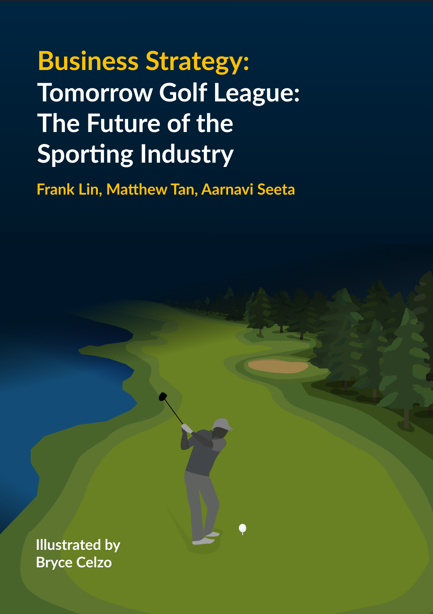
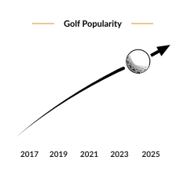
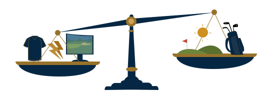

By Frank Lin, Matthew Tan, Aarnavi Seeta | Illustrated by Bryce Celzo | Winter 2026 Issue | Business Strategy

A sport is often thought of as intense, fast-paced and physically draining. However, the sport of golf, being around for over 560 years (Historic-UK), has an entirely different style from the average sport played today. Golf today is known for its slow pace and quiet, patient atmosphere, which unsurprisingly appeals to older audiences. However, as younger generations grow up in a much faster, more digital entertainment environment, questions are being raised about whether traditional golf can remain as relevant and engaging in the future.
To adapt to the changing audience needs, the Tomorrow Golf League, or TGL was established. Backed by major names such as Tiger Woods and Rory McIlroy, TGL is a new version of golf built for a modern audience. It uses simulator-based play in an arena, a team-versus-team format, and rules such as a shot clock to create a faster and more entertaining spectator experience.
By modernizing golf through a team-versus-team format, a faster pace, and a more engaging spectator experience, TGL could revolutionize the future of the sport and make golf more relevant to younger generations. While it may not fully replace traditional golf, it has the potential to change how audiences – both new and old – connect with the game.
A pace that accommodates for diminishing attention spans
One of the biggest selling points TGL has for younger audiences is the much faster pace. With attention spans rapidly diminishing – currently at 8.25 seconds for the average person according to a Microsoft study – standard 18-hole games that are anywhere from 3 to 4 hours are becoming less and less appealing to young viewers (Lazrus Golf). TGL directly addresses this issue by speeding the game up. The use of a shot clock limits how long players can take, which reduces the time gaps in between shots and keeps the action moving. Combined with the arena setting and simulator format, this creates a version of golf that feels more intense and more watchable for audiences.
Such extreme changes in the sport are crucial in order to stay relevant. It’s important to remember that sports aren’t just competing with each other, but with every other form of entertainment available today. If golf wants to attract younger audiences, it requires formats that fit the way modern viewers consume content. Chief Commercial Officer Stephen Ayles for the PGA Tour of Australasia told the New York Times: “We’re trying to appeal to a wider audience, particularly a younger audience. The whole event is based on making it easier to watch for a different demographic than traditional golf fans” (Long Reads).
The Team Format Makes Golf More Engaging to Watch
Another major strength of TGL is the team vs. team structure. Traditional golf usually focuses on individual performance, which can lack the same emotional energy found in team sports. Findings derived in a study by the Georgia Southern Commons showed that team attachment and team identification are major drivers of televised sports viewership, explaining 51% of the variance in the frequency in which college students watched sports on TV. TGL introduces those elements into golf. By placing players on teams rather than isolating them as individuals, it creates more opportunities for group chemistry, strategy, and collaboration.
This shift is especially important for younger viewers. As mentioned above, younger sports fans are drawn to relationships between players, and the sense of community that comes from cheering for a team. TGL gives golf a structure that is much closer to the sports culture many young people already enjoy, which can result in making golf feel less distant overall.
Golf’s Growing Popularity Creates the Perfect Opportunity
TGL also happens to be arriving during a golden opportunity when golf is gaining traction. According to NGF, “More than one-third of the U.S. population over the age of 5 played golf (on-course or off-course), followed golf on television or online, read about the game, or listened to a golf-related podcast in 2025. This is up 43% since record-keeping began in 2016”. This massive surge in attention creates an opportunity for TGL to build on existing momentum instead of needing to build an audience base from scratch.
A major factor in attracting audiences to golf is the inclusion of famous golfing figures millions of viewers can root for. Tiger Woods, one of the biggest influences in the golfing industry, grew the number of American golfers from 24.4 million in 1996 to 29.8 million players in just 10 years after joining (St George’s Golf). Today, dozens of influential figures in the industry, such as Rory McIlroy or Phil Mickelson, continue to drive interest in the sport.
Another cause of the recent golfing upsurge is due to the effect of online media. Netflix’s “Full Swing” documentary series, which covers prominent figures in the history of golf, reached 53.1 million hours watched for their first season (GOLF.com).
Furthermore, digital creators like Good Good on YouTube have amassed millions of viewers for the golf industry which further boosts its popularity today.

A Different Perspective: Can It Really Replace Traditional Golf?

Despite its potential, there are still valid questions about whether TGL can truly revolutionize golf in the long run. One concern is that by changing so many elements of the sport, it may lose the qualities that traditional golf fans value most. The quiet atmosphere, long-form strategy, outdoor setting, and mental patience of traditional golf are central to its identity. For many longtime fans, those features are not weaknesses, but rather what makes golf meaningful in the first place.
Because of that, TGL may struggle to appeal to older audiences who desire to continue seeing traditional golf. Faster play and more spectacle may attract new viewers, but they may also push away fans who prefer the original form of the sport. If TGL becomes too disconnected from what makes golf unique, it risks feeling less like an evolution of golf and more like an entirely different sport.
Another concern is whether the features TGL offers are enough on their own to guarantee long-term success. Faster pace and team play may help, but sports audiences are influenced by many other factors as well, such as emotional storytelling, cultural relevance and accessibility which TGL doesn’t compensate for. Furthermore, TGL is currently tied to major names like Tiger Woods and Rory McIlroy. If those figures become less involved over time, the league may lose some of the appeal that helped it attract attention in the first place.
For that reason, TGL's long-term future will depend on more than just innovation. It will need to build a lasting identity that can survive beyond its founding stars and prove that viewers are interested in the format itself, not only the celebrities attached to it.
Conclusion
The future of golf may depend on its ability to adapt without completely abandoning its roots. TGL represents one of the clearest attempts to do exactly that. By introducing a faster pace, a team-based structure, and a more dynamic spectator experience, it offers a version of golf that is far more aligned with the preferences of younger audiences today.
Although it may not fully replace traditional golf, that does not mean it lacks significance. In fact, its greatest impact may come from proving that golf can evolve while still remaining recognizable as the same sport. If TGL succeeds, it could help golf reach audiences that traditional formats have struggled to capture for years.
Overall, TGL is not just a new golf league. It is a test of whether sports rooted in tradition can modernize themselves enough to stay culturally relevant. Its success or failure may say a great deal not only about the future of golf, but about the future of sports entertainment as a whole.